地政学
マラケシュはアトラス山脈北麓の平野にあり、サハラ側、海岸部、王都ラバト、商都カサブランカを結ぶ内陸拠点です。旧王都の記憶と南部観光の入口が重なり、国家の周縁ではなく広域を束ねる象徴的な都市になっています。

🇲🇦 モロッコ / 北アフリカ / World City Atlas
アトラス山脈の麓で旧市街、スーク、庭園、宗教儀礼、観光労働、住宅拡大、水資源の緊張が重なるモロッコ南部の歴史都市です。
都市の骨格
マラケシュは海港ではなく、内陸の交易路、山麓の水、王朝の記憶、観光の想像力によって世界と接続してきた都市です。
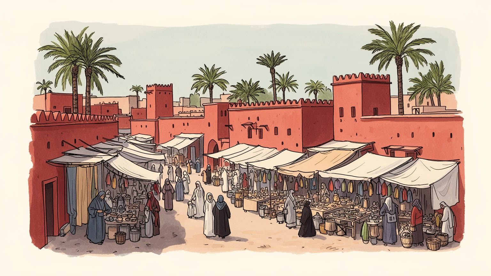
マラケシュはアトラス山脈北麓の平野にあり、サハラ側、海岸部、王都ラバト、商都カサブランカを結ぶ内陸拠点です。旧王都の記憶と南部観光の入口が重なり、国家の周縁ではなく広域を束ねる象徴的な都市になっています。
経済はホテル、リアド、飲食、案内、交通、手工芸、建設、農産物流通に支えられています。観光収入は大きいが季節変動があり、職人、清掃、調理、運転、露店、宿泊労働の賃金と住まいが都市の持続性を左右する基盤です。
モスクの礼拝、スーフィー聖者の記憶、ラマダンの食卓、ベルベル系の言語文化、アンダルス由来の意匠が同居します。広場の語り、音楽、香辛料、革細工は観光資源である前に、都市の時間を刻む生活文化である厚い層です。
ジャマ・エル・フナ、メディナ、庭園は世界的に知られるが、住民には水不足、夏の暑さ、家賃上昇、交通混雑、旧市街の保存、新市街の拡大が日常課題となります。観光の成功は暮らしを守る調整で測られる現実の尺度です。
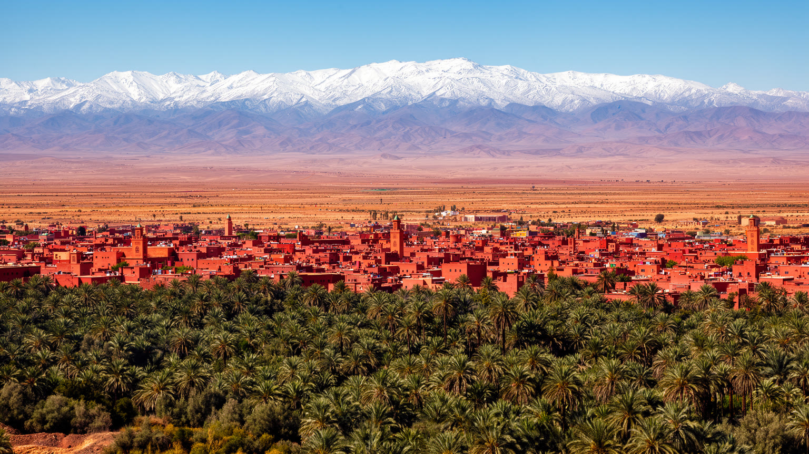
マラケシュは大西洋岸の港ではなく、アトラス山脈の北麓に開けた平野に位置する内陸都市です。この配置が都市の性格を決めてきました。北へ向かえばサフィやカサブランカ方面の海岸と王都ラバトへつながり、南へ進めば峠を越えてオアシス、サハラ縁辺、遊牧と交易の世界へ近づきます。都市の赤い城壁は景観の記号ですが、その背後には山から流れる水、地下水路、果樹園、郊外農地、隊商路の記憶があります。乾いた気候の中で都市を保つには、日陰、壁、庭園、水場、朝夕の活動時間が重要でした。今日の空港、高速道路、観光バスもこの旧い結節性を別の形で引き継ぎます。マラケシュを読む時は、メディナの迷路だけでなく、山麓から来る水と人、海岸都市へ向かう物流、南部観光の入口としての役割を重ねて見る必要があります。都市は辺境に孤立せず、モロッコの北と南、山と平野、歴史王朝と現代観光を結ぶ結び目として置かれています。そのため気候変動や山間部の地震、道路の遮断、農村の貧困は、旧市街の観光にも直接影響します。華やかな都市景観は、広域の地理に支えられた脆い均衡でもあります。山麓の村から来る労働者や食材も都市の一部であり、災害時にはその結び付きの弱さが表面化します。地理は背景ではなく、都市の安全、価格、季節の混雑を決める条件です。山を望む景色は、依存の地図でもあります。
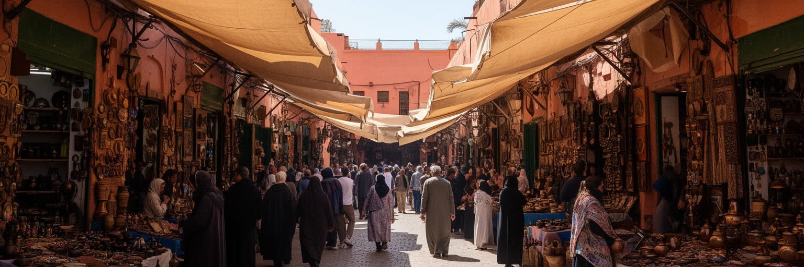
マラケシュのメディナは観光客にとって迷路のような体験ですが、住民と職人にとっては仕事、物流、信仰、近隣関係が重なる実用の都市です。狭い路地には革、金属、木工、織物、香辛料、菓子、ランプ、陶器の店が連なり、工房の奥では修理、加工、仕上げ、交渉が行われます。スークの価値は異国情緒だけではありません。原料を仕入れる人、荷を運ぶ若者、価格を決める商人、店先を清掃する人、家族で技術を継ぐ職人、観光客の言語に合わせる販売員がいて初めて市場は動きます。世界遺産としての保存は重要ですが、建物を残すだけでは市場の生命は残りません。家賃が上がり、土産物向けの商品だけが増え、職人が郊外へ押し出されれば、メディナは暮らす場所から消費される舞台へ変わってしまいます。観光客の値切りも都市文化の一部として語られますが、安さを求めすぎれば手仕事の時間を軽く扱うことになります。スークを読むとは、路地の美しさの背後にある労働、技能、家族経営、流通、保存制度を読むことです。迷いやすい街路は不便さではなく、暑さを避け、徒歩の速度で商いと会話を成立させる都市の知恵でもあります。搬入の小型車、荷車、祈りへ向かう人、学校帰りの子どもが同じ道を使うため、路地は観光の通路である前に生活のインフラです。その混在を保てるかがメディナの未来を決めます。市場は日々更新される記憶の場でもあります。
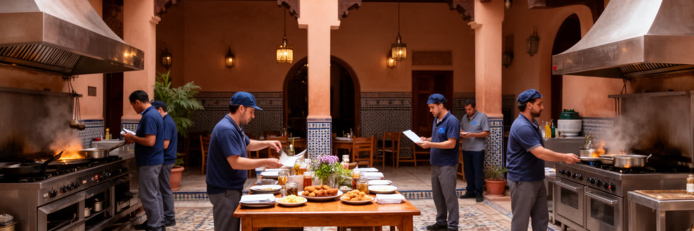
マラケシュはモロッコ観光の代表的な入口であり、ホテル、リアド、レストラン、スパ、ガイド、タクシー、馬車、土産物、撮影、日帰りツアーが大きな雇用を作ります。ですが観光都市の輝きは、季節変動と不安定な労働にも支えられています。宿泊客が増える時期には清掃、調理、洗濯、警備、庭の手入れ、空港送迎、予約対応が集中し、閑散期には収入が急に細る仕事もあります。旧邸宅を改装したリアドは魅力的な宿泊体験を提供する一方、旧市街の住宅を宿泊施設へ変え、家賃と土地価格を押し上げることがあります。観光客向けの価格と住民向けの生活費が離れるほど、中心部で働く人が中心部に住みにくくなります。さらに、写真映えするサービスの背後には、長時間の立ち仕事、多言語対応、チップへの依存、非公式な雇用、女性の家事労働があります。観光は地域に外貨と誇りをもたらしますが、その利益が学校、医療、住宅、職業訓練へ届かなければ、都市の格差を広げます。マラケシュの観光を評価するには、宿の美しさだけでなく、働く人の契約、通勤、賃金、休息、住まいを見る必要があります。もてなしの質は、働き手の生活がどれほど守られるかに左右されます。空港から宿までの滑らかな移動も、予約管理、道路整備、荷物運び、深夜勤務に支えられています。観光の成功は数字だけでなく、繁忙期の負担を地域がどう分け合うかで判断されます。
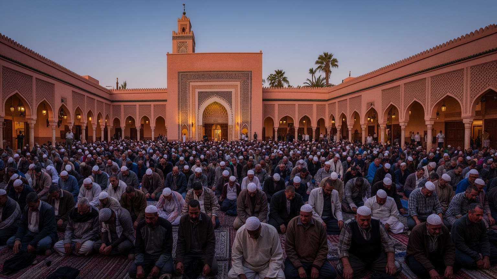
マラケシュの宗教生活は、観光案内で目立つモスクの塔だけでは把握できません。クトゥビーヤ・モスクのミナレットは都市の象徴ですが、日々の信仰は近隣の小さなモスク、ラマダンの食卓、金曜礼拝、祝祭、葬送、聖者廟への参詣、家庭の祈りとして続いています。礼拝の呼びかけは時間の区切りを作り、商店の開閉、食事、休息、広場の人出にも影響します。スーフィー系の記憶や聖者崇敬は、都市の保護、治癒、共同体のつながりを語る言葉として残り、グナワやアンダルス系の音楽表現にもつながります。観光客にとって宗教空間は美しい建築や写真の対象になりやすいですが、住民にとっては身を清め、挨拶を交わし、家族の節目を支える生活の制度です。非ムスリムが入れない場所があることも、排除ではなく礼拝空間の秩序を守るルールとして理解する必要があります。宗教生活は厳格さだけでなく、商売、食、音楽、近所づきあいと柔らかく結びつきます。マラケシュでは、信仰が都市の背景ではなく、歩く時間、休む時間、食べる時間、訪問者の振る舞いを調整する枠組みになっています。宗教を尊重することは、静けさや服装だけでなく、住民の生活リズムを乱さない態度でもあります。ラマダン中の夕方には市場の速度が変わり、家族や近隣のつながりが食卓に表れます。宗教は観光の演出ではなく、都市が自分の時間を保つための深い秩序です。
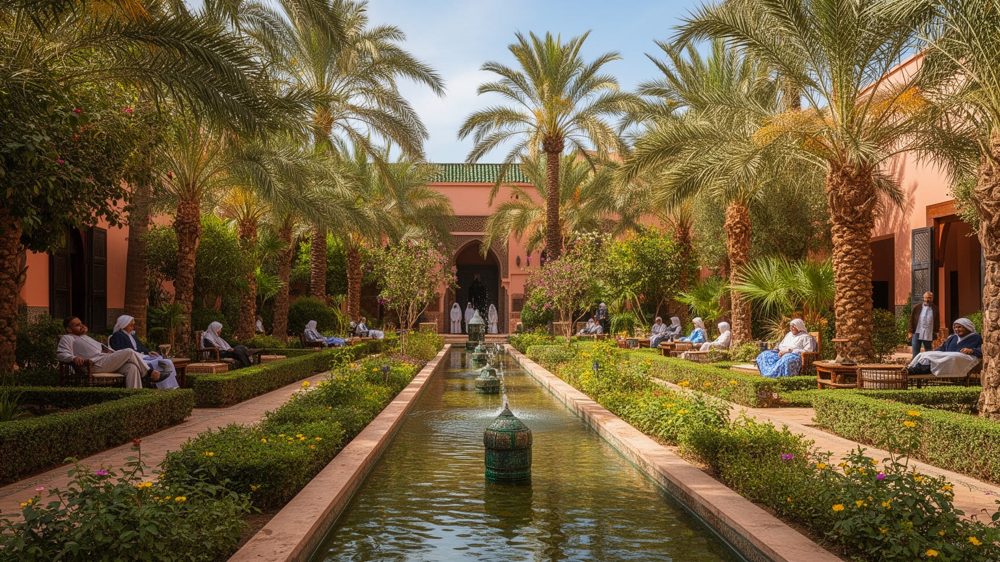
マラケシュの庭園は、暑く乾いた都市で水と日陰をどう扱うかを示す文化です。宮殿の中庭、リアドの噴水、オリーブや柑橘の庭、アグダル庭園、メナラ庭園、近代的な観光庭園は、単なる装飾ではなく、暑さを和らげ、視線を整え、都市の内側に静けさを作る仕組みでした。イスラム圏の庭園は楽園の象徴として語られますが、マラケシュではその象徴性が山麓の水、地下水路、貯水池、灌漑、農地と結びついています。問題は、気候変動と観光拡大の中で水の余裕が縮んでいることです。ホテルのプール、ゴルフ場、庭園の散水、郊外住宅、農業用水が競合すれば、都市の美しい緑は社会的な問いを含みます。誰のために水を使うのか、古い庭園をどう維持するのか、低所得地区の水道や排水は十分かが問われます。庭園を訪れる時は、静かな木陰と水面の美しさだけでなく、それを支える労働と資源配分を見なければなりません。マラケシュの緑は自然に豊かな景観ではなく、乾燥地で人が水を集め、管理し、分け合ってきた結果です。水の使い方は、都市の美意識と公平性を同時に映しています。庭師、清掃員、配管を直す職人の仕事がなければ、涼しげな景観は保てません。水不足が深まるほど、観光の快適さと住民の生活用水をどう両立させるかが都市政策の中心になります。緑を守る議論は、節水と公共性の議論でもあります。水は都市の記憶でもあります。
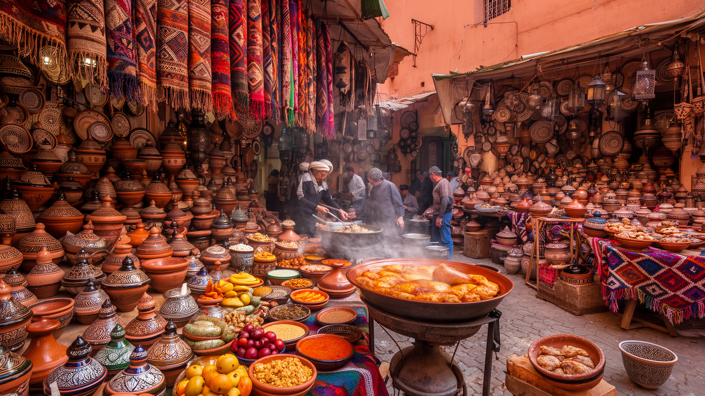
マラケシュの文化を支えるのは、建築遺産だけではなく、手工芸と食の細かな技術です。革のバブーシュ、金属ランプ、木彫、絨毯、陶器、染色、香辛料、アルガン油、菓子、ミントティー、タジン、クスクスは、観光客に分かりやすい記号であると同時に、家庭、職人、農村、商人、料理人を結ぶ生活の産物でもあります。手仕事は一品ごとの美しさに注目されがちですが、その価値は材料の入手、道具の維持、弟子の育成、価格交渉、輸送、販売の全体にあります。食も同じで、広場の屋台やリアドの食卓の背後には、郊外の市場、女性の家内労働、農家、精肉、パン焼き窯、香辛料商、配達人がいます。観光が拡大すると、伝統は保存される一方で、外部の期待に合わせて単純化されることもあります。味や模様が「モロッコらしさ」として固定されるほど、地域差や家庭ごとの変化は見えにくくなります。マラケシュの手工芸と食を尊重するには、商品を記念品としてだけでなく、働く人の時間と技能の結晶として扱う必要があります。広場で食べる一皿も、スークで買う一足も、都市の産業、家族、農村、観光の関係を小さく映しています。若い世代が技術を継ぐには、誇りだけでなく安定した収入と学びの場が必要です。食卓と工房を支える条件を整えることが、文化を生きた形で残す道になります。買う側の敬意もまた文化を支える力です。
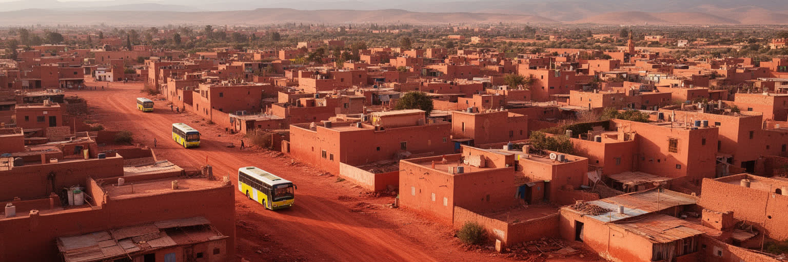
マラケシュの都市像はメディナに集中しがちですが、住民の多くは旧城壁の外に広がる新市街、集合住宅、郊外地区で暮らしています。ギリーズやイヴェルナージュのような地区には商業、カフェ、ホテル、広い道路、近代的な住宅が並び、さらに外側では人口増加に合わせて住宅地と幹線道路が広がります。旧市街のリアドが宿泊施設に変わるほど、中心部で暮らす住民は家賃や改修費の上昇に直面し、新しい住宅地へ移る場合があります。郊外化は住宅の供給を増やす一方、通勤、公共交通、学校、病院、公園、排水、ゴミ収集の整備を求めます。観光客が見る華やかな都市と、住民が毎日使うバス停、学校、病院、市場、行政窓口の都市は重なっていますが同じではありません。若者の雇用、女性の移動、安全な夜道、手頃な家賃は、世界遺産の保存と同じくらい重要な都市課題です。放課後のサッカー、家族の買い物、高齢者の通院も新市街の質で変わります。旧市街を守ることと新市街を住みやすくすることは対立しません。むしろ、住民が都市に残れる住宅政策がなければ、保存されたメディナは生活の厚みを失います。マラケシュを読むには、写真に残りやすい路地だけでなく、外側へ伸びる住宅地の日常を視野に入れる必要があります。都市の未来は、観光区域の魅力と生活区域の質をどう結ぶかで決まります。通勤に時間がかかるほど、低賃金のサービス労働者ほど負担は重くなります。住宅政策は観光政策と切り離せない都市の基礎です。
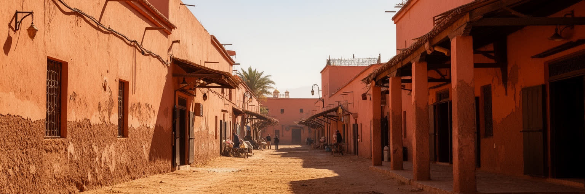
マラケシュの暑さは旅情の一部として語られやすいですが、住民と労働者にとっては健康、収入、住まい、移動の問題です。夏の強い日差しは、屋外で働く建設労働者、露店、案内人、清掃員、運転手、庭師に大きな負担をかけます。旧市街の狭い路地や厚い壁は日陰と涼しさを作る伝統的な知恵ですが、過密な住宅や換気の悪い部屋では熱がこもります。新しい地区では広い道路と舗装面が熱を蓄え、車移動への依存も増えます。気候変動によって熱波や水不足が強まれば、観光の快適さだけでなく、低所得世帯の電気代、学校の活動、医療、農産物価格にも影響します。都市の適応策は、噴水や庭園を増やすだけでは足りません。公共の日陰、涼める施設、断熱、通風、歩行者空間、労働時間の調整、水道と排水の改善が必要です。観光客は暑さを短期間の体験として受け止められますが、住民は一年の生活リズムとして向き合います。マラケシュの気候を読むことは、赤い壁と青い空の美しさに加えて、暑さに弱い人がどこで休めるのか、誰が炎天下で働いているのかを見ることです。暑さへの備えは、都市の公平性を測る基準になっています。昼の活動を避ける習慣や夕方の広場の賑わいも、気候への適応として理解できます。伝統的な知恵を現代の住宅、交通、労働規則へ接続できるかが問われます。涼しさを買える人と買えない人の差も見逃せません。
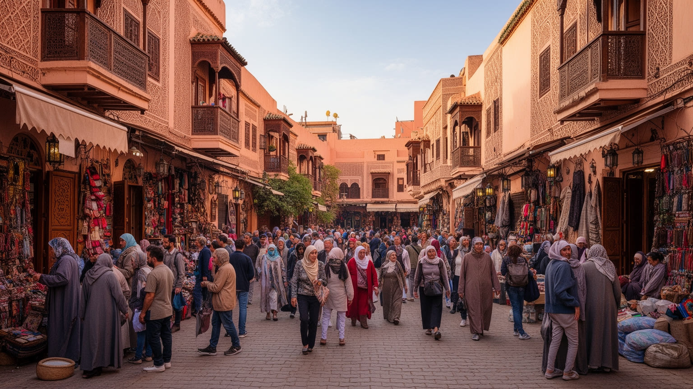
マラケシュの遺産価値は、城壁、門、モスク、宮殿、墓廟、スーク、広場、リアド、庭園が一体となった都市景観にあります。ですが遺産は、古い建物を美しく残せば守れるものではありません。観光客の増加、宿泊施設への転用、交通量、騒音、短期滞在向けの店舗、外部資本の改修は、旧市街の暮らしを少しずつ変えます。修復が進めば安全性と景観は良くなりますが、住民が負担できない費用や家賃の上昇を招く場合もあります。逆に放置すれば建物は傷み、地震や豪雨への脆弱性も高まります。ジャマ・エル・フナの語り、音楽、屋台、見世物も無形文化として価値があり、夜の広場は都市の劇場になりますが、観光客の視線が強くなるほど演じる人の尊厳や収入配分が問題になります。遺産保存は過去を固定する作業ではなく、住民、職人、宗教施設、商人、行政、観光業者、訪問者の利害を調整する政治です。写真に撮りやすい外観だけを守ると、生活の音や匂い、作業場、子どもの遊び場は失われます。マラケシュの遺産を読むには、保存の成功と同時に、誰が中心から押し出され、誰が利益を得ているのかを見る必要があります。生きた旧市街を残すには、建築の修復と住民の権利を同じ課題として扱うことが不可欠です。地震への備え、電気設備の更新、排水の改善も保存の一部です。見た目を変えずに安全を高める地味な工事こそ、遺産都市の日常を守る仕事になります。
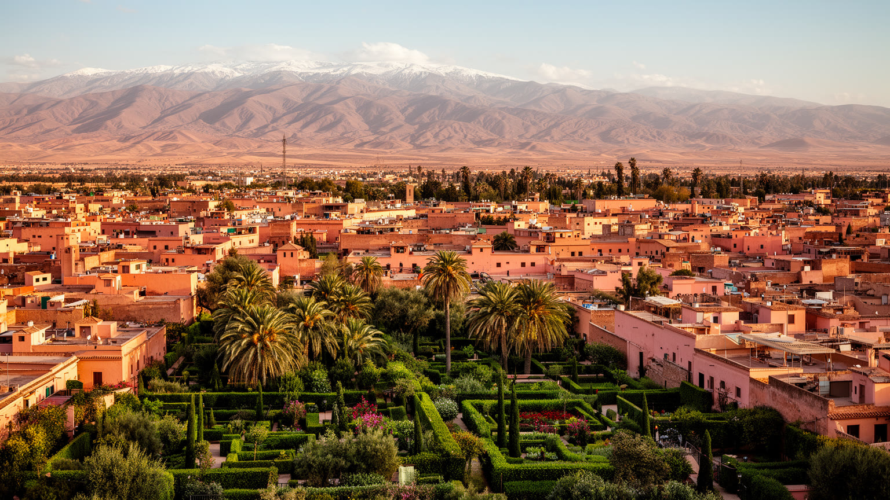
マラケシュは、外から見るほど単純な「赤い観光都市」ではありません。旧王都の威信、アトラス山麓の水、スークの労働、イスラムの礼拝時間、ベルベル系の文化、フランス保護領期以後の新市街、現代の空港と高級宿泊産業が一つの都市に重なっています。訪問者は広場の熱気、リアドの静けさ、庭園の緑、スークの香りを強く記憶しますが、その体験は住民の住宅、清掃、調理、交通、警備、職人仕事、農村からの供給に支えられています。都市の魅力が世界的に高まるほど、家賃、水、労働条件、遺産保存、交通混雑、暑さへの対応は重くなります。マラケシュを尊重して読むには、幻想を否定する必要はありません。むしろ、その幻想が誰の手で作られ、誰の生活を圧迫し、どの資源に依存しているのかを確かめることが重要です。旧市街と新市街、観光区域と住宅地、庭園と水不足、広場の演者とホテルの投資家を同じ地図に置くと、この都市は北アフリカの歴史都市であると同時に、現代観光が地域社会に与える影響を映す鏡になります。マラケシュの価値は、美しい迷路を保存することだけでなく、その迷路を生きる人が都市の未来に参加できるかにかかっています。赤い壁の内側にある生活と、外側へ伸びる新しい住宅地を同時に見ることで、観光の記憶だけでは届かない都市の全体像が現れます。そこに、この都市を世界地図の中で読む意味があります。